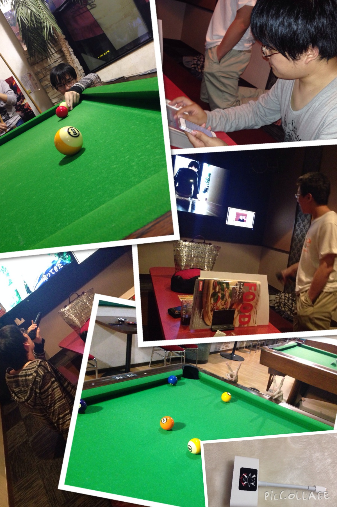
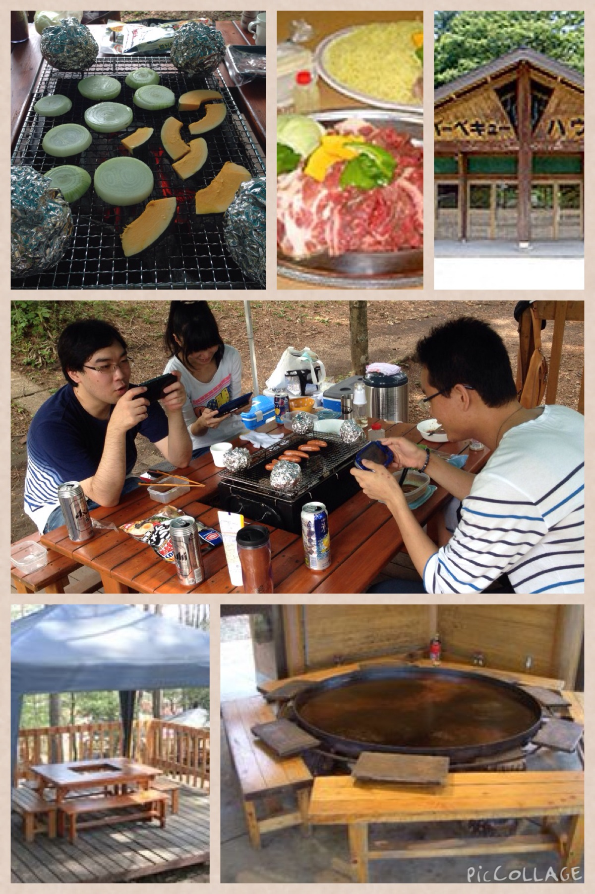

2017年09月22日 ディズニーナイトツアー |
2017年12月2,3日 東海工業専門学校金山校学校祭 |
2017年05月21日 BitSummit 5th |
2017年08月31日
530BBQ in 大高緑地公園 |
2017年02月06日 解散会 |
2017年03月10日 脱出ゲーム |
|
2016年09月15日
東京ゲームショウ2016 出展 |
2016年10月24日
学園祭打ち上げ  |
|
2016年07月10日
BitSummit in 京都 |
2016年09月03日
530BBQ in 大高緑地公園 |
|
2016年03月08日
解散会 in 金山 |
2016年06月18日
CC2セミナー＆ファンミーティング |
|
2015年10月26日
Shoot De Get打ち上げ in 大須 |
2015年12月12日 忘年会 in 伝馬町 |
|
2015年07月11日 BitSummit in 京都 |
2015年08月04日 530BBQ in 大高緑地 |
2015年03月10日 卒業＆打ち上げ |
2015年05月30日
肉食 in 栄 |
2014年12月13日 忘年会 in 神宮前 |
2015年02月22日 作品展打ち上げ in 金山 |
2014年10月26日 Shoot De Get 打ち上げ in 金山  |
2014年12月06日
CC2 会社説明会 in 大阪 |
2014年09月19日 緊急ミーティング in お台場 |
2014年09月09日 530BBQ in 旭高原元気村  |
2013年09月18日 東京ゲームショウ2013 出展 |
2013年08月06日 530BBQ in 大高緑地公園 |